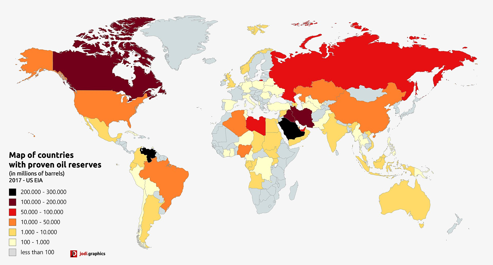
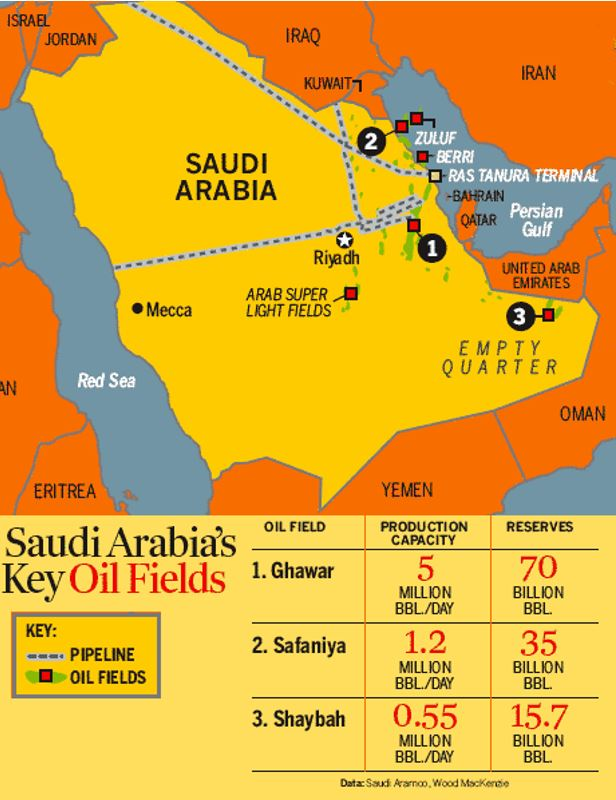
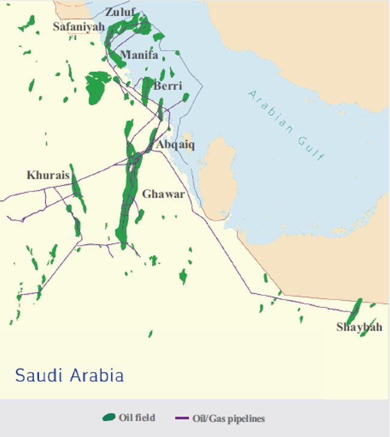

Since the first drillings in the 1930s, the oil industry has sustained the Saudi Arabian economy. Accounting for around 17% of the world’s petroleum reserves, Saudi Arabia profits greatly from their oil fields. Currently boasting 267 million barrels of proven crude oil reserves 1, Saudi Arabia finds itself in a league of its own in the oil market.
Saudi Aramco is the primary oil company in Saudi Arabia and the state government currently has a 95% stake in the company. As oil prices fell in the 1980s, the Saudi government increased their ownership in Aramco, which had previously held joint ties with the United States. Aramco has strong ties to both upstream and downstream oil operations. These are defined as "Upstream operations include identifying, extracting, or producing materials. Downstream operations include the post-production of crude oil and natural gas, bringing products to consumers. Companies that provide transportation and storage services for oil and gas products are considered midstream operators."3 Currently however, Aramco is investing into more upstream activities to maintain Saudi Arabia as the leading country of crude oil exports 4. In 2023, Aramco profited $121 billion dollars, however this was still 25% below their record breaking 2022 which saw oil prices rise dramatically.5 Various different types and thicknesses of oil are produced by Aramco, ranging from light grades which are mainly produced at onshore oil fields, to heavier grades which are mainly produced offshore. The majority of oil production occurs in the eastern part of the country and offshore in the Persian Gulf. Accounting for 40% of crude oil in Saudi Arabia from 2014-2020, Ghawar is far and away the largest oil field in the country. The second largest field is called Safaniya, which accounts for around 9% of the nation’s oil during the same time-period 6.
 
While Saudi Arabia produces around 9.5 million barrels/day, only a quarter of that stays in the country.9
Aramco is in charge of over 90 pipelines covering more than 12,000 miles which they use to transport their oil
domestically. Aramco exports much of their oil via ships to Asia, with China being their leading customer.
Oil is extremely important to the Saudi Arabian economy and continues to be so despite efforts from
the government to diversify. The oil industry has created billions of dollars for the country and
for its leaders who live in extreme luxury.